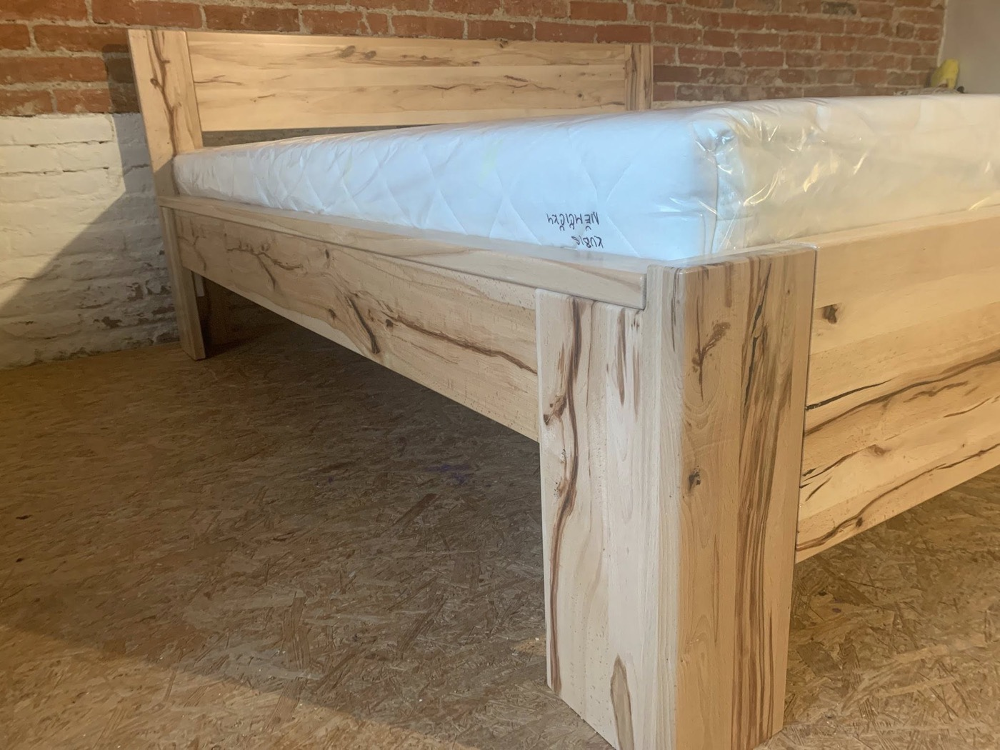

Rodinné stolařství v Němčičkách
Rodinná firma, která postele nejen prodává, ale sama staví. Od roku 1999 v Němčičkách u Židlochovic.

Od roku 1999
Naše rodinná firma byla založena roku 1999 jako TRUHLÁŘSTVÍ se zaměřením na výrobu nábytku.
Každá zakázka je naše srdeční záležitost a spokojenost zákazníka je našim cílem. Děláme všechno, co je v našich silách, aby byl náš nábytek co nejkvalitnější a aby jste se k nám vraceli pouze s další poptávkou nebo případnou návštěvou.
Co a z čeho vyrábíme
V prvopočátku jsme se zabývali zhotovováním veškerých typů postelí převážně patrových paland a vestavných pater. Jako materiál jsme si zvolili přírodní masívní dřevo, které je svým charakterem nezávadnosti velmi vhodné do ložnicových místností.
Dále jsme na základě poptávek našich zákazníků rozšířili výrobní sortiment na veškerý nábytek a bytové doplňky převážně z masivního dřeva (psací stoly, komody, knihovny, skříně, věšákové stěny, ale i truhlice, police, atd...). Za dobu naší existence jsme vyzkoušeli různé druhy přírodního dřeva a nejvyužívanější z nich uvádíme v sekci "Ukázka dřevin", kde naleznete charakter určitého dřeva a vhodnosti jeho užití.
Prodejna od jara 2013
Od jara 2013 jsme zřídili ukázkovou prodejnu našeho nábytku, převážně postelí z masivu, ale i matrací od českých výrobců, které je možné si vyzkoušet. Na prodejně udržujeme skladem některé postele, ale z důvodů velké poptávky se může stát, že se nám všechny vyprodají, proto je lepší si návštěvu u nás domluvit předem.
Těšíme se na Vaši návštěvu.
Kubišovi
- Založeno
- 1999, jako truhlářství se zaměřením na výrobu nábytku
- První výrobky
- patrové palandy a vestavná patra
- Materiál
- přírodní masivní dřevo
- Ukázková prodejna
- od jara 2013, Němčičky 5
Přijeďte se podívat
Postele, nábytek a matrace od českých výrobců si můžete prohlédnout a vyzkoušet přímo v Němčičkách. Návštěvu prosím domluvte předem telefonem na 604 107 577.